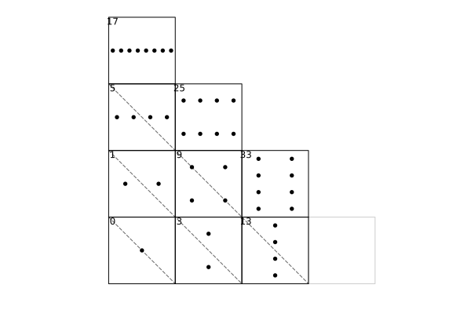
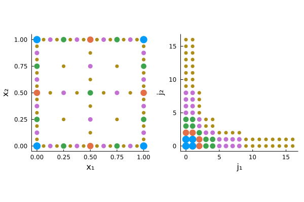

Layouts and iteration
A layout determines the canonical ordering of a sparse grid coefficient vector. This affects
- how coefficient vectors are interpreted,
- iteration order for algorithms,
- whether fast unidirectional sweeps can be applied,
- how to convert between different orderings.
UnifiedSparseGrids supports two layouts:
RecursiveLayout()(default; used by the unidirectional engine)SubspaceLayout()(block layout; useful for blockwise algorithms such as the combination technique)
Both layouts cover the same set of sparse grid points. They differ only by ordering.
Sparse grid structure
For each physical dimension, we assume a nested sequence of 1D axis states
\[X_0 \subset X_1 \subset X_2 \subset \cdots,\]
with incremental blocks $\Delta X_r = X_r \setminus X_{r-1}$. In the API:
points(axis, r)returns $X_r$,newpoints(axis, r)returns $\Delta X_r$,totalsize(axis, r)returns $|X_r|$,blocksize(axis, r)returns $|\Delta X_r|$.
In $D$ dimensions, a multi-index set $\mathcal{I}$ selects which refinement vectors $r = (r_1,\dots,r_D)$ are present.
The endpoint conventions at $r = 0$ are summarized in Conventions.
Grid specification: SparseGridSpec and SparseGrid
The core container for sparse grid metadata is SparseGridSpec. A SparseGrid is a small wrapper around a spec.
A spec contains
axes: a tuple of 1D axis families, one per dimension,indexset: the multi-index set $\mathcal{I}$.
using UnifiedSparseGrids
D = 2
I = SmolyakIndexSet(D, 4)
axes = ntuple(_ -> ChebyshevGaussLobattoNodes(), Val(D))
spec = SparseGridSpec(axes, I)
grid = SparseGrid(spec)
@show refinement_caps(grid)
@show length(grid)refinement_caps
refinement_caps(grid) returns an SVector{D,Int} of the maximum 1D refinement index needed by the index set, i.e. the per-dimension caps used to bound iteration. It is often used to precompute 1D point coordinates.
Anisotropic caps
Some index sets accept an explicit per-dimension cap cap to limit refinement anisotropically. For example:
D = 2
I = SmolyakIndexSet(D, 6; cap=(6, 3))
grid = SparseGrid(SparseGridSpec(ntuple(_ -> ChebyshevGaussLobattoNodes(), Val(D)), I))
@show refinement_caps(grid) # (6, 3)This affects both iteration bounds and the point set shape. The plotting helpers determine axis limits from the data ranges, so anisotropic grids render correctly (and use equal visible axis spans by default).
Choosing a layout
You can traverse a grid in a chosen layout without changing the grid object:
it_rec = traverse(grid; layout=RecursiveLayout())
it_sub = traverse(grid; layout=SubspaceLayout())
# both iterators yield the same coordinate type (SVector{D,Int})
first(it_rec), first(it_sub)Recursive layout
The recursive layout is the ordering induced by the package's pseudorecursive traversal. Intuitively, it stores coefficients in contiguous fibers (1D slices) that can be streamed with minimal indirection.
This is the native layout of the unidirectional engine (see Unidirectional principle), which applies separable tensor-product operators by repeated 1D sweeps.
Use
it = traverse(grid; layout=RecursiveLayout())Subspace layout
The subspace layout concatenates tensor-product blocks $W_r$ (one block per refinement multi-index $r$):
\[W_r = \Delta X_{r_1} \times \cdots \times \Delta X_{r_D}.\]
Each block is stored contiguously as a tensor-product array of size $|\Delta X_{\ell_1}|\times\cdots\times|\Delta X_{\ell_D}|$.
Blocks are ordered by increasing $\|r\|_1$ and then by a deterministic colex/"strong" order.
Use
it = traverse(grid; layout=SubspaceLayout())Iterating blocks
For blockwise algorithms (e.g. combination technique), you can iterate blocks directly:
for blk in each_subspace_block(grid)
@show blk.refinement blk.offset blk.len blk.extents
endHere blk.offset:blk.offset+blk.len-1 is the coefficient range of that subspace in the concatenated subspace layout.
Visualizing the block structure
The optional Plots extension provides helpers to visualize layouts and point sets.
Below is the block layout for a 2D Smolyak grid with interior dyadic nodes (no endpoints). Rectangles represent subspaces $W_r$ and the labels are 0-based block offsets.
The example uses an anisotropic cap to illustrate truncation; ghost blocks (not present in the grid) are shown with faint outlines.

And a matching view of the sparse grid point set (here using DyadicNodes() with endpoints) together with its corresponding integer index set (both in 2D).

To generate these figures locally:
using UnifiedSparseGrids
using Plots # triggers the plotting extension
grid_layout = SparseGrid(SparseGridSpec(ntuple(_ -> DyadicNodes(endpoints=false), Val(2)),
SmolyakIndexSet(2, 6; cap=(5, 3))))
savefig(plot_subspace_layout(grid_layout; show_diagonals=true, show_ghost_blocks=true),
"subspace_layout.svg")
grid_pts = SparseGrid(SparseGridSpec(ntuple(_ -> DyadicNodes(), Val(2)), SmolyakIndexSet(2, 5)))
p_grid = plot_sparse_grid(grid_pts)
p_idx = plot_sparse_indexset(grid_pts)
savefig(Plots.plot(p_grid, p_idx; layout=(1, 2)), "sparse_grid_indexset_2d.svg")Transformations between layouts
The package provides explicit transformations between the two coefficient orderings:
recursive_to_subspace(grid, x_rec) -> x_subsubspace_to_recursive(grid, x_sub) -> x_rec
These functions return a new vector with the same length as x_rec/x_sub.
This is useful when:
- you want to run a blockwise algorithm in
SubspaceLayout()but an unidirectional operator inRecursiveLayout(), or - you want to compare results produced by algorithms that naturally use different orderings.